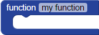

BlocklyProp reference for FUNCTIONS blocks


 Compatible with all Propeller board types (except Scribbler Robot)
Compatible with all Propeller board types (except Scribbler Robot)
Functions and Memory: Creating and re-using functions in your main program can save on program memory. However, calling functions with the new processor block sets aside 128 bytes of "stack space" each time - that is a portion of the Propeller micrcontroller's memory - used to execution the function. If your function running in a new processor is exceptionally large with many variables and computations, it might exceed this stack space and give unexpected results.
define function

The define function block is used to build a function that can be reused.
- Enclose a group of blocks that you want to re-use with the function block.
- Next, give the function a unique name in the my function drop-down menu. See About Naming Things for the rules.
Once you have created a function, a run function will be created for it, and will appear in the Functions menu.
run function

The run function block runs the code inside of a define function block by the same name. This is may be referred to as "calling a function" or "making a function call." You must first create and name a function with a define function block to generate a run function block.
You can use a run function block in two ways.
- Put a run function block in your main program.
- Attach a run function block to a new processor block. This will make the runction run in its own processor, and at the same time, your main program can continue executing. EXCEPTION: Terminal blocks can only run from the main program.